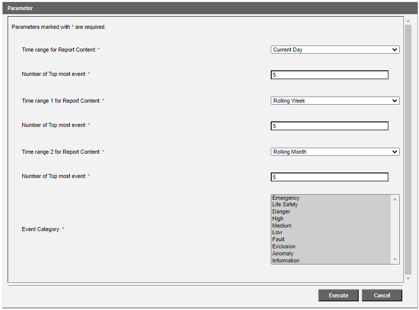
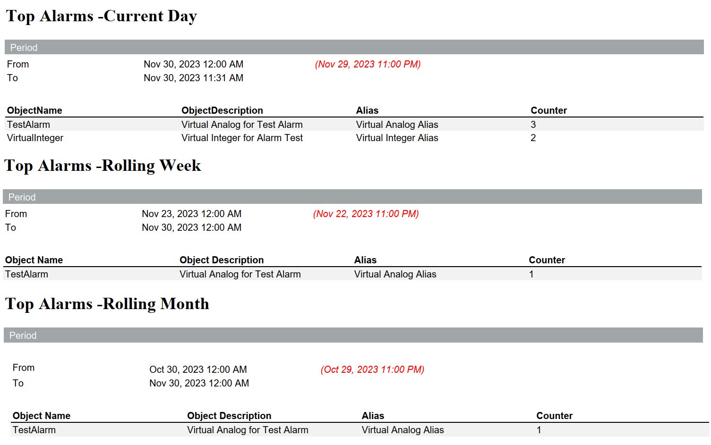

Alarm Summary Tables Report
This report is designed to show the five most frequent alarms since midnight of the current day, rolling week, and rolling month.
By default, it consists of three tables with five rows (one for each alarm source), the time intervals mentioned above, and filtered event categories. The standard report can be adjusted by:
- Setting different time ranges already available for Advanced Report.
- Specifying a different number of topmost events for each table (1-20 rows).
- Filtering alarms by categories, so to generate a report about alarms belonging to a specific category only. The event categories are the same as the EN event schema. Use CTRL + click or SHIFT + click for multiple selection.

Sample report
The source alarms are sorted with the most frequent alarm on top for each table.
